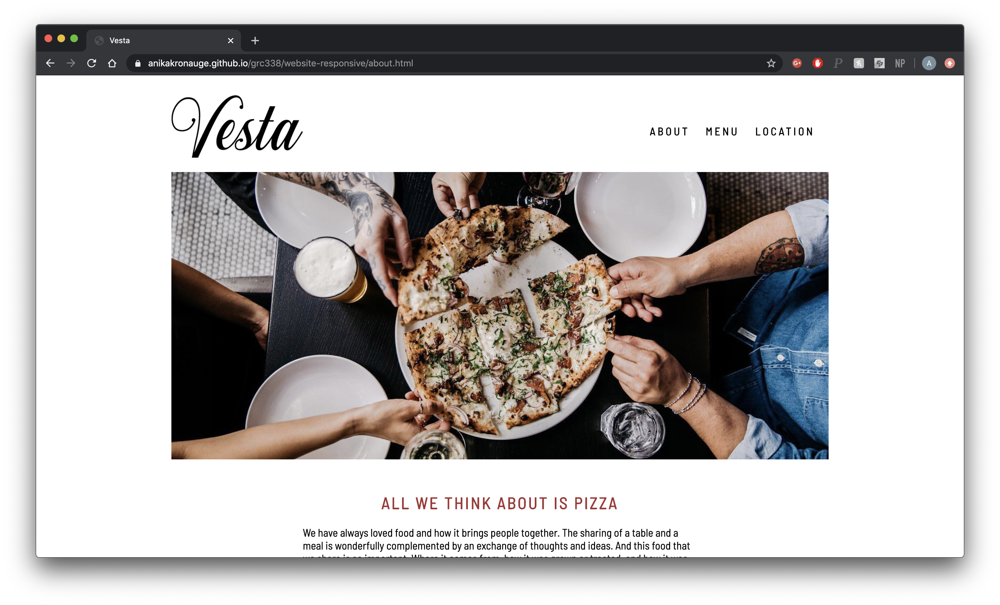
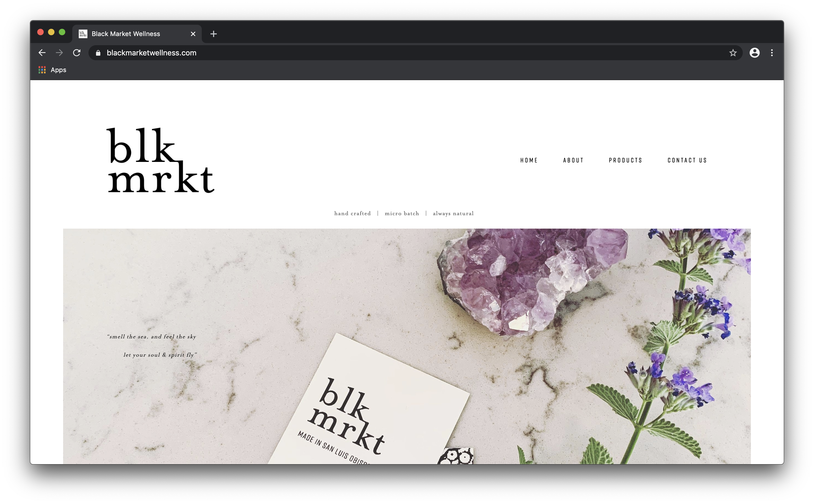
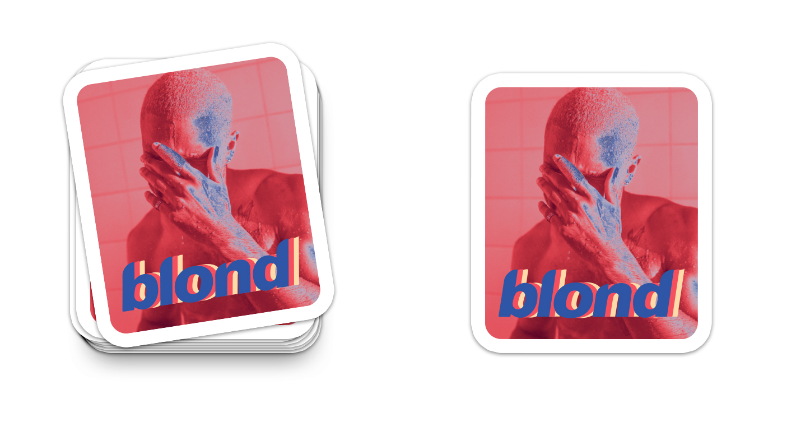

Freelance & design Projects
Sunday Album Audit
For this project, I was commissioned by a talent agency to entirely conceptualize and create a logo for their music blog, a new sector of their business. Through this project, I worked closely with my client to gather information on what they were looking to portray with their new logo. Through careful consideration, I was able to come up with a few different concepts that my client could choose from. Once they chose the half-record logo, I was able to apply necessary tweaks and edits as my client saw fit.

Blk Mrkt Wellness
During my Junior and Senior year of college, I had the pleasure of working side by side with a local San Luis Obispo Entrepreneur. I helped the owner of Blk Mrkt with all of her graphic design needs including; logo design, packaging and labeling design, marketing collateral, as well as web design. Click here to visit the website I designed and maintained using square space.
Graduation Announcements
Upon ordering graduation announcements to send to my family and friends, I realized that I had the software to be able to make my own at a fraction of the price. Once I finished making my own, I was able to make some for my friends as well! Here is an example of one that I made for my friend, Alexis.
Web Design
Throughout the years, I have worked on quite a few different web design projects. I have experience with JavaScript, HTML and CSS as well as website builders like Squarespace.
Vesta Web Redesign
For a recent class project, I was able to take the website of one of my favorite restaurants and create a more simple chic website click here to see the responsive version of the website.
Black Market Wellness Website
Along with the graphic design work I did during my time at Black Market Wellness, I also had the opportunity to create a platform using Squarespace for customers to explore available products and learn more about CBD oil and its benefits.
Click here to visit the website I designed and maintained using Squarespace.
Additional Projects
Throughout my time in Graphic Communication at Cal Poly, I have had the opportunity to learn about many different printing technologies and have been able to apply that knowledge to many in class projects. Here are some of my favorites.
Flexographic Sticker Printing
With this project, I learned how to set up a file with different color channels for the Mark Andy 2200 flexographic printing press we are lucky to be able to use in the Graphic Communication department.
Screen Printing
My senior year, I took a specialty printing class in which I learned how to build files for multi-color designs and was able to screen print a batch of shirts that I designed! Below, you can see individual files I built for each respective color, as well as the finished product!
Offset Lithographic Postcard Printing
In the Offset Lithography class I took, I was able to learn how to operate a Heidelberg printing press and how to image each individual CMYK plate and how to adjust the press to make sure the images are properly registered with each other throughout the print run.